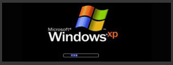
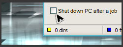
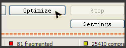
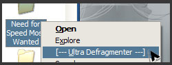
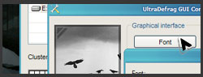
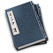

ULTRADEFRAG
یک نرم افزار دیفراگ با کدهای باز

اولترا دیفراگ
مستندات
- کتاب دستی
- توسعه
- ترجمه ها
- مقاله های سایت ویکیپدیا در مورد دیفراگ
- مقاله های سایت ویکیپدیا در مورد مافوق دیفراگ
لینکهای سریع
- گالری هنری
- لوگوهای اینترنتی اولترادیفراگ
- صفحه شخصی سازنده نرم افزار
- وبلاگ شخصی جاستین
- صفحه شخصی سایم
- صفحه شخصی از استفان
- صفحه شخصی ناجی


برنامه اولترا دیفراگ مخفف اولترا دیفراگمنتر است
و هیچ وابستگی به علامت تجاری ندارد و همه علائم
تجاری, مارکها و نامها متعلق به صاحبان این برنامه
می باشد
ازاهداف اصلی این برنامه انجام این کار با حداکثر سرعت ممکن است
دانلود | لیست تواناییها | تصاویر | نقطه نظرات شما |
آخرین اخبار- اولترا دیفراگ 4 منتشر شد
:نسخه جدید بطور فوق العاده ای قابلیتهای بیشتری دارد که در زیر می خوانید
- اشکالات عمده آن حل شده
- قوی ترین روش به حداقل رساندن خطا به تمام ماژولها اضافه شد
- حالت کرنل حذف شد
- مستندات برای خوانایی بیشتر دوباره نویسی شد
- صفحه اینترنتی به منظور دسترسی بهتر به قسمتهای مختلف پاکسازی شد
اینجا لیست کامل تغییرات
اولترا دیفراگ یک نرم افزار قدرتمند در زمینه دیفراگ کردن دیسک برای سیستم عامل وینروز می باشد.این نرم افزار اولین برنامه دیفراگ قوی می باشد که کدهای آنرا در اختیارتان قرار داده ایم. در واقع تمامی فایلها دارای فایلهای رجیستری هستند که این برنامه در هنگام دیفراگ آنها را تشخیص داده و در زمان بوت کردن آنها را پردازش میکند . همچنین یکی از اهداف اولیه این نرم افزار این است که عملیت را با سرعت بالا انجام دهد. این برنامه کاملا سازگار با ویندوز ان تی , 2000, اکس پی , ویندوز سرور2003, ویندوز ویستا, ویندوز سرور2008, وینددوز 7 و تمامی ویندوز های 64 بیتی میباشد
:بعضی از قابلیتهای اصلی نرم افزار
(لیست کامل قابلیتها اینجا):
- دیفراگ در حالت بوت
این قابلیت جهت دیفراگ فایلهای سیستمی میباشد. زیرا در حالت معمول این فایلها قفل میباشند
- خاموش کردن سیستم بعد از انجام کار
همه ما میدانیم یک کار کامل زمان زیادی را میگیرد و اغلب ما در آن هنگام سیستم را ترک میکنیم تا خودش کارش را انجام دهد. با این قابلیت نیازی نیست که هر جند دقیقه به سیستم سر بزنید و ببینید که آیا کار تمام شده است یا خیر. زیرا بعد از انجام کار سیستم خودبخود خاموش خواهد شد
- بهینه سازی سریع دیسک
بهینه ساز, همه داده ها را دوباره جاسازی کرده و به ابتدای درایو منتقل میسازد در بسیاری از موارد دیده شده سرعت بالا آمدن سیستم به دلیل قرار گرفتن داده ها در ابتدای درایو بالاتر میرود
- قابلیت دیفراگ یک فایل یا فولدر
بعد از نصب نرم افزار شما قادر خواهید بود یک فایل یا فولدر را انتخاب نموده و آن را دیفراگ نمایید. این گزینه بسیار مفید است بخصوص زمانی که یک برنامه جدید را نصب کرده اید و بخواهید فقط آن برنامه را با سرعت بالا دیفراگ کنید
- ظاهر خصوصی شده نرم افزار
اولترا دیفراگ شما را قادر میسازد تا ظاهر نرم افزار را بطور دلخواه تنظیم نمایید از جمله فونت ها و اندازه آنها. و نمای آن سازگاری با تم ویندوز خواهد داشت. البته در ویندوز ویستا اینطور نخواهد بود و ظاهری قدیمی تر نشان داده خواهد شد
!برنامه اولترا دیفراگ را به زبان بومی خود ترجمه کنید

شما میتوانید با درج یک ترجمه جدید یا تغییر ترجمه موجود در کار ترجمه ما شرکت نمایید
را ببینیدUltraDefrag.WikiSpaces.com برای جزئیات بیشتر
بفرمایید. کمک شما قابل تقدیر خواهد بود
دانلود نرم افزار اولترا دیفراگ
32-bit Windows برای سیستم عامل
NT4.0, 2000, XP, Vista, 7 - Server NT4.0, 2000, 2003, 2008
64-bit Windows برای سیستم عامل
x64 Editions of XP, Vista, 7 - Server 2003, 2008
64-bit Windows برای سیستم عامل